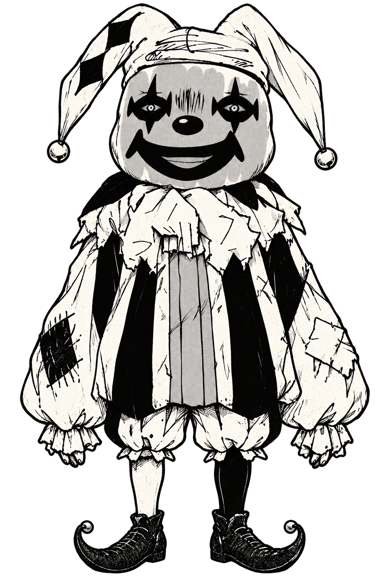
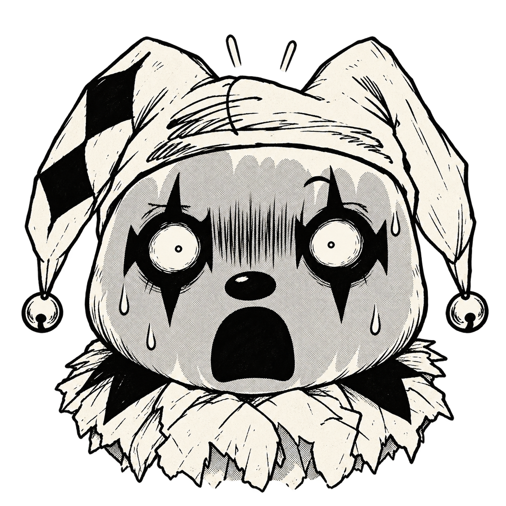
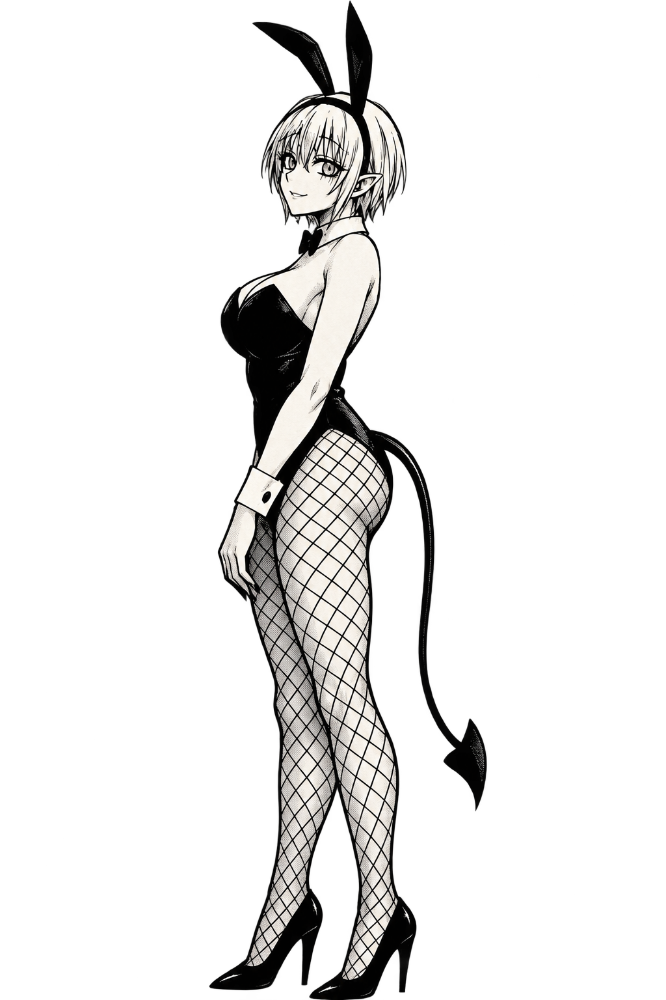

イカサマダイス
10個から3個を選んでロール。直前に相手が使った3個は選択不可。未獲得かつブロックされていない目が揃えば1PT。
0PLAYER
VS
0CPU
あなたのターン
ROUND 1獲得済みの目（両者共通・再得点不可）: なし
CPUのブロック目（このぞろ目は無効）: - 不成立 0/6



CPUが投げる前に、ブロックする目を選んで確定
ダイスをクリックして選択・解除できます。30個の固有ダイスから10個を使用し、交換時は控えの20個から10個を選出。1-2-3のような3連番なら相手をスキップして同じブロック目のまま追加手番。🤡が3つ揃うと得点なしで全ダイス交換＆獲得済みの目リセット（2-2なら🤡×3で勝利）。相手の投擲前にブロックする目を1つ指定でき、その目のぞろ目は無効（🤡の効果も不発）。ぞろ目なしが6回続くと全ダイス交換（獲得済みの目は維持）